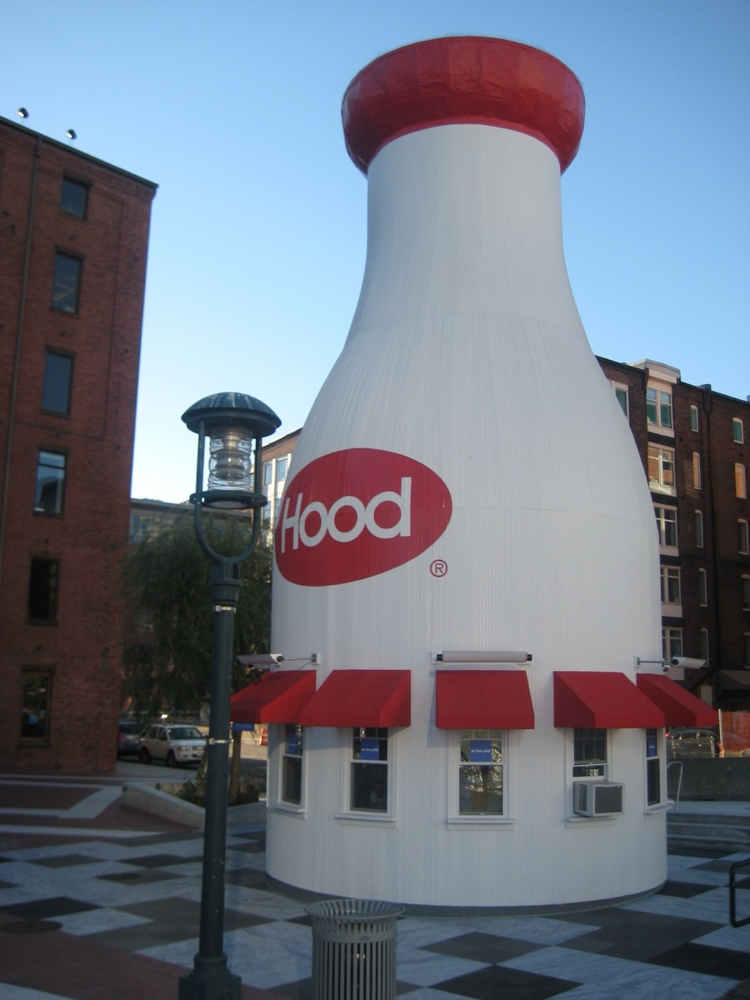
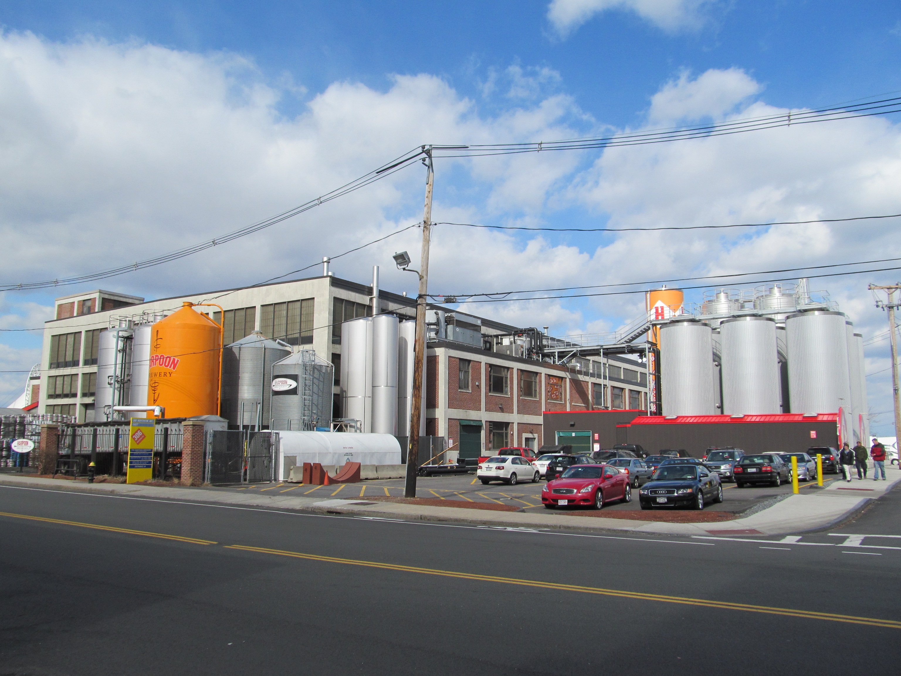

Fifteen years ago the Seaport was a thousand acres of surface parking, a courthouse, a convention center and a fish pier. Today it is the densest new neighborhood in the country's oldest big city: glass towers, a two-mile Harborwalk, a contemporary art museum cantilevered over the water, two breweries that people fly in for, and more rooftop bars than the rest of Boston combined. It is the one part of the city that looks nothing like the postcards, and that is the point.
Locals have a complicated relationship with it. It is expensive, it can feel like an office park after 7pm on a Tuesday, and almost nobody who lives in Boston calls it "the Innovation District." But the harbor views from Fan Pier are the best in the city, Trillium and Row 34 are as good as anything in town, and the Fort Point warehouses along the channel are a real neighborhood with a hundred years of history and a working artists' community.
This guide covers the best things to do in Seaport Boston, where to eat, the breweries and rooftops, the older Fort Point district, the neighborhood's odd history as filled land, what happens on Seaport Common through the year, and how to use the Silver Line without getting confused. It sits across the channel from Downtown and across the harbor from the North End, and it is easy to combine with either.
The short answer
The 10 best things to do in the Seaport
- See the Institute of Contemporary Art
- Walk the Harborwalk to Fan Pier at sunset
- Drink a beer at Trillium Fort Point
- Throw tea in the harbor at the Tea Party Ships and Museum
- Oysters and a lobster roll at Row 34
- A drink on the Lookout Rooftop at the Envoy
- Pretzels and a pint at Harpoon Brewery
- Take the kids to the Boston Children's Museum
- Swing on the light-up swings at the Lawn on D
- Wander the Fort Point art district
01
Seaport quick facts and how to get there
| Where | South of the Fort Point Channel and east of Downtown, on the harbor. Officially part of South Boston; nobody calls it that |
| Size | About 1,000 acres including the piers and the Marine Industrial Park; the walkable core between the channel and the World Trade Center is 20 minutes end to end |
| Nearest T stops | South Station (Red Line, Silver Line, commuter rail), 10–15-minute walk · Courthouse (Silver Line SL1, SL2, SL3), in the middle of the neighborhood · World Trade Center (Silver Line), next to the convention center · Silver Line Way, for the Lawn on D and the Innovation and Design Building |
| From Downtown | Walk over the Congress Street, Summer Street or Seaport Boulevard bridges from South Station or the Financial District. Ten minutes to Fort Point, twenty to Fan Pier |
| From the airport | Silver Line SL1 bus from any Logan terminal runs straight to the Seaport and South Station in about 20 minutes |
| Main streets | Seaport Boulevard (towers, shops, Seaport Common) · Northern Avenue (the piers, Harpoon, the Pavilion) · Congress Street (Fort Point, the museums) · Harbor Way (the pedestrian spine to the water) |
| Best time | Late afternoon into sunset, May through October. Thursday evenings for the ICA. Weekend mornings for a quiet Harborwalk |
| Parking | Plenty of garages, all expensive ($30–50 for an evening). Lots fill on convention and concert days. Take the T if you can |
A note on the Silver Line. It is a bus, not a train, but from South Station it runs in its own tunnel under the Seaport, so the Courthouse and World Trade Center stops feel like subway stations. All three Seaport routes (SL1 to the airport, SL2 to the Design Center, SL3 to Chelsea) share the tunnel, so from South Station any of them will get you to Courthouse or World Trade Center. Inbound from the airport the SL1 is free. If you are staying Downtown, walking is often as fast as the transfer.
02
The best things to do in the Seaport
Art in the afternoon, the water at sunset, and a beer somewhere in between.
The Institute of Contemporary Art

The ICA moved into its glass-and-steel building on the water in 2006, before almost anything else in the Seaport existed, and it is still the best reason to come. The collection is rotating contemporary work, the shows are usually two or three at a time and take about 90 minutes, and the building itself is half the experience: the top floor gallery cantilevers 80 feet out over the harbor, and the glass-walled Founders Gallery on that level is a floor-to-ceiling view of the water with nothing else in it. The outdoor grandstand steps facing the harbor are open to anyone, ticket or not, and are the best free seat in the neighborhood.
The Harborwalk and Fan Pier Park

The Boston Harborwalk runs for 43 miles around the city's shoreline, and the Seaport section, from the Fort Point Channel out past the ICA to the Fish Pier, is the most continuous and best-kept stretch of it. The centerpiece is Fan Pier Park, a small green behind the federal courthouse where the walkway rounds the corner and the whole Downtown skyline lines up across the water, with the North End and the Zakim Bridge to the left and Long Wharf and the Custom House Tower straight ahead. This is the view on every Boston skyline photograph, and it is best about twenty minutes after sunset, when the buildings light up and the water goes flat.
The Moakley Courthouse itself is a public building; the curving glass atrium along the water is open on weekdays and has rotating exhibits about the courts and the harbor. Walk the loop in either direction: west along the channel to the Tea Party Ships and the Children's Museum, or east past the ICA and the yacht basin to Harpoon and the Fish Pier.
Boston Tea Party Ships and Museum
It is a costumed, interactive, hour-long tour, and it is much better than that description suggests. You are given a role, you sit through a reenacted town meeting, you board a replica of one of the three ships and throw a crate of tea into the Fort Point Channel, and then you see one of the two surviving tea chests from the actual night of December 16, 1773. The site is roughly where Griffin's Wharf stood, give or take a century of landfill. Abigail's Tea Room upstairs has a good view of the channel and serves the five teas that went into the harbor.
Boston Children's Museum

One of the oldest children's museums in the country, in a converted wool warehouse on the channel, with a three-story climbing structure in the lobby, a real Japanese house shipped from Kyoto, a construction zone, a bubble room and a toddler area. For under-eights it is the best half day in the city. The 40-foot Hood Milk Bottle out front has sold ice cream and hot dogs in summer since 1977. Martin's Park, next door, is a free and very good waterfront playground named for Martin Richard, the youngest victim of the 2013 Marathon bombing.
The Lawn on D
A 2.7-acre event lawn behind the convention center that turned out to be the most popular thing the convention center ever built. The draw is the ring of oval swings that glow and change color after dark, which are photographed constantly and are genuinely fun to sit in. There is a bar in summer, lawn games, food trucks, free concerts and movies, and it is one of the few places in the Seaport where nobody is in a hurry. It closes for the winter and for private events, so check the calendar.
A concert at the Leader Bank Pavilion
A 5,000-seat covered outdoor amphitheater on the harbor, open on the water side so you hear the show with the skyline behind the stage. It has had several sponsor names over the years; locals still call it "the Pavilion" and figure it out. The schedule is mostly touring rock, pop and comedy from Memorial Day to Labor Day. Sunset shows are the ones to book.
03
Where to eat in the Seaport
The Seaport has more restaurants per block than anywhere in Boston and a lot of them are national chains in glass boxes. These are the ones that belong here.
Row 34: the oyster bar
Row 34 is the Seaport restaurant locals recommend without hedging. It is a big, loud, brick-and-timber room in a Fort Point warehouse with a raw bar the length of the wall, oysters from its own farm in Duxbury, a hot buttered lobster roll that competes with Neptune's, fried clams and a list of about twenty draft beers that leans heavily on the neighborhood. The bar is walk-in and turns over fast. It is the answer for a first dinner in the Seaport.
Yankee Lobster: the no-frills seafood shack
A family fish market and takeout counter next to Harpoon that has been on Northern Avenue since long before the towers. Order at the counter, eat at a picnic table, and get the lobster roll, the clam chowder or the fried scallops. It is the closest thing to a Cape Cod clam shack inside the city, and it is a good deal by Seaport standards.
Legal Harborside: three floors on the water
The flagship of the Boston chain, on the site of the original Jimmy's Harborside. The first floor is the casual fish-house menu with the famous chowder; the second floor is a formal dining room; the third floor is a roof deck with a retractable roof and a bar that runs until late. If you only go to one Legal, it should be this one, for the location as much as the food.
Flour Bakery: breakfast and lunch in Fort Point
Joanne Chang's original Fort Point location, in a warehouse on a side street off Congress. Sticky buns, the roast lamb sandwich, egg sandwiches and good coffee, and a counter by the window that makes a fine hour with a book. For a full café list see the best cafés in Boston.
Woods Hill Pier 4: the special-occasion dinner
On the site of the old Anthony's Pier 4, the restaurant that defined the Boston waterfront for fifty years, with a farm-to-table menu sourced from the owner's farm in New Hampshire and floor-to-ceiling windows on the harbor. The room is the draw; book a window table for sunset.
Lolita, Pastoral and Lucky's
Three Fort Point standbys for a night out. Lolita is a dark, theatrical Mexican restaurant with a cotton-candy dessert and a bar that fills up fast. Pastoral does wood-fired pizza and a good happy hour in an old warehouse. Lucky's Lounge is an unmarked basement bar with no sign, a Sinatra tribute on Sunday nights and a burger that has outlasted three waves of neighborhood development.
The lobster roll comparison, including Row 34 and Yankee, is in the best lobster rolls in Boston.
04
Breweries and rooftops: where to drink in the Seaport
Two of the best-known breweries in New England are a fifteen-minute walk apart, and the neighborhood has more rooftops than anywhere else in Boston.
| Place | Address | What it is | Go for |
|---|---|---|---|
| Trillium Fort Point | 50 Thomson Pl | Three-story brewery and restaurant, rooftop deck | Hazy IPAs, the roof in summer |
| Harpoon Brewery | 306 Northern Ave | Working brewery with a beer hall | Pretzels, UFO wheat beer, tours |
| Lookout Rooftop, the Envoy | 70 Sleeper St | Hotel rooftop bar, 6th floor | The skyline view; winter igloos |
| Legal Harborside roof deck | 270 Northern Ave | Third-floor bar with retractable roof | Harbor views, open in most weather |
| Cisco Brewers Seaport | Seaport Common area, 100 Seaport Blvd | Outdoor seasonal beer garden | Live music, summer evenings |
Trillium Fort Point
Trillium started in a small Fort Point garage in 2013 and became one of the most sought-after breweries in the country on the strength of its hazy New England IPAs. The current Fort Point location is a three-story building a block from the original, with a restaurant on the ground floor, a taproom above and a rooftop deck with a view of the towers. The beer is the point: Congress Street IPA is named for the neighborhood, Fort Point Pale Ale is the easy one, and the fruited sours are the ones to try if IPAs are not your thing. Cans to go are sold at the counter. In summer, Trillium also runs a seasonal beer garden on the Greenway, on the Downtown side of the channel.
Harpoon Brewery

Harpoon has brewed on Northern Avenue since 1987, when the Seaport was a working port and nothing else, and it is the neighborhood's oldest ongoing business that visitors go to. The beer hall is a big timber-roofed room with communal tables, a long bar pouring the full range, and a pretzel program that is a real reason to visit: enormous, fresh, with beer-cheese and mustard. Tours run through the brewhouse and end with a tasting. Harpoon Fest in May and Octoberfest in the fall take over the parking lot with bands and a few thousand people.
Lookout Rooftop at the Envoy Hotel
The rooftop that started the Seaport rooftop trend. Six floors up on the Fort Point Channel with the entire Downtown skyline across the water, it is the view Fan Pier gives you with a drink in your hand. It is busy every night in summer and there is often a line at the elevator by 6pm; a reservation solves that. From roughly December through March the roof is covered in heated, clear-walled igloos that seat six to eight and book out weeks ahead. See the best rooftop bars in Boston for how it compares to the rest of the city.
05
Fort Point and the art district
Between the channel and the towers is the older, better-looking Seaport: a grid of brick warehouses that has housed one of the largest artist communities in New England since the 1970s.
The Boston Wharf Company built about a hundred brick-and-timber warehouses on Congress, Summer, A and Melcher Streets between 1880 and 1920 to store wool, sugar and molasses off the piers. When shipping left in the 1960s the buildings emptied out and artists moved in, and by the 1980s Fort Point was the largest concentration of working artists in New England. Most of the warehouses have since become lofts and offices, and rents pushed many of the studios out, but the Fort Point Arts Community still runs a gallery and about 300 artists still work in the neighborhood.
The best time to see it is Fort Point Open Studios, held twice a year, usually one weekend in May and one in October, when dozens of studios open their doors and you can walk through buildings that are otherwise locked. The FPAC Gallery at 300 Summer Street is open year-round and free. The neighborhood is also full of sanctioned public art: look for the rotating installations on the Fort Point Channel itself, under the Summer Street bridge and along the Harborwalk on the channel side.
A few other things worth knowing here. The Boston Fire Museum at 344 Congress Street is a volunteer-run collection of antique fire engines in a 1891 firehouse, open Saturdays and free. The Barking Crab at 88 Sleeper Street, a red-and-yellow tent on the channel that has served fried seafood at picnic tables since 1994, is touristy and beloved and fine. The Envoy Hotel and Lookout are here. And the walk along the channel from the Children's Museum to the Summer Street bridge, with the old Northern Avenue swing bridge rusting in the water, is the most photogenic ten minutes in the Seaport.
06
History: from tidal flats to towers
Almost everything in the Seaport is standing on water. In 1800 the neighborhood was the South Boston Flats, a tidal mudflat that flooded twice a day. Between the 1830s and the 1880s the Commonwealth filled it in, hundreds of acres at a time, to build rail yards and piers for the port, and the Boston Wharf Company followed with the Fort Point warehouses. The Boston Fish Pier opened in 1914 as the largest and most modern fish-handling facility in the world; it is still there, still working, and still smells like it at 6am.
By the 1950s shipping was leaving for container ports elsewhere, the rail yards went quiet, and the district turned into acres of parking for Downtown commuters, with the Northern Avenue seafood restaurants, Anthony's Pier 4 and Jimmy's Harborside, as the only reason to cross the channel. The old Fish Pier and Commonwealth Pier (the World Trade Center building) survived; nearly everything else was asphalt.
Three things changed it. The Big Dig put the Ted Williams Tunnel and the Silver Line under the neighborhood in the 1990s and 2000s, connecting it to the airport and Downtown. The Moakley Courthouse (1998), the convention center (2004) and the ICA (2006) gave people reasons to come. And in 2010 the city rebranded the parking lots as the "Innovation District" and rezoned for height. What followed was the fastest build-out in Boston's history: roughly $20 billion of development in a decade, headquarters for General Electric (briefly), Amazon, Vertex and a dozen law firms, and about 5,000 new apartments. The Seaport has been criticized, reasonably, for being expensive and monochrome, and the city has spent the last several years trying to add the parks, the public art and the affordable housing it skipped at the start.
Two things to keep in mind on a walk. First, the neighborhood is at sea level on fill, and climate resilience is not abstract here: the raised Harborwalk sections and the flood barriers around new buildings are deliberate. Second, the street grid is still full of gaps, fenced lots and parking structures waiting to be built on, which is why a block of glass towers can end abruptly at a chain-link fence. That is not a mistake; it is the neighborhood in the middle of being made.
07
Side streets and quieter corners
Seaport Boulevard is the busy spine. The neighborhood's better moments are a block or two off it.
The Fish Pier and Northern Avenue
East of Harpoon, the neighborhood stops pretending. The Fish Pier still lands and processes catch, the Boston Design Center sits on the old Army base, and Northern Avenue runs past dry docks and the cruise terminal. Walk out on the pier in the early morning to watch the boats unload, then walk back toward Harpoon or Yankee Lobster for lunch. This is the part of the Seaport that has looked the same for a hundred years.
Harbor Way
A pedestrian street that cuts from Seaport Boulevard to the water, past Seaport Common, a small tree grove, and several rotating public art pieces. It is the newest and best-designed public space in the neighborhood, and it is where Snowport sets up in winter. At the water end it joins the Harborwalk next to the ICA.
The Moakley Courthouse waterfront
The federal courthouse's curved glass wall faces the harbor, and the lawn and walkway between it and the water are quieter than Fan Pier next door. On weekdays the atrium is open to the public and worth ten minutes for the view alone. Security screening applies.
A Street and Melcher Street, Fort Point
The two streets in Fort Point where the warehouse grid is most intact. Melcher curves, which is unusual in Boston, and the old Boston Wharf Company sign is still on the building at the corner of Summer Street. A Street runs south to the Gillette factory, which has made razors here since 1905. There are a few good bars, some galleries and, on Open Studios weekends, everything.
The Innovation and Design Building
A 1.4-million-square-foot former Army warehouse at the far end of the Seaport, now offices, design showrooms and a handful of restaurants and cafés, including Chickadee. It is enormous, half empty on weekends, and one of the few places in the neighborhood with real industrial scale.
08
Seaport Common and events through the year
Seaport Common at 85 Northern Avenue, the lawn between the Seaport Boulevard towers, is the neighborhood's programmed public space. The developer that owns most of the surrounding blocks runs a nearly constant calendar on it, and while some of it is brand activations, a lot of it is free and good. In summer there are outdoor movies, morning fitness classes, live music on weekend afternoons, a produce market and a rotating set of pop-up bars including a seasonal Cisco Brewers garden. Most of it is listed on the Seaport's own website a month ahead; check dates before you go.
Snowport, from roughly mid-November through the end of December, is the one that has become a real Boston tradition. A holiday market of about 100 small vendor huts fills Seaport Common and Harbor Way, with a Christmas tree market, a curling rink, hot drinks and lights. It is free to walk through and gets very busy on weekend afternoons; weeknights are calmer.
Other dates on the neighborhood calendar: Fort Point Open Studios in May and October; Harpoon Fest in May and Octoberfest at the brewery in the fall; the Boston Marathon weekend expo at the convention center in April; Fourth of July, when the Harborwalk fills to watch the harbor and the Esplanade fireworks in the distance; and the summer concert season at the Pavilion. Boston Calling, the city's big music festival, is in Allston, not here, despite what the name suggests. Our things to do this weekend page lists what is coming up across the city.
09
Tips for a first visit to the Seaport
Time it for sunset. The Seaport is a different neighborhood at 7pm in June than it is at noon in February. Arrive in the late afternoon, do the ICA or a brewery, and be on the Harborwalk at Fan Pier when the light goes.
Walk from South Station. Unless you are coming from the airport, the Silver Line transfer often takes as long as the walk over the Congress Street bridge, and the walk takes you through Fort Point, which is the best part.
Book the rooftops. Lookout, the Legal roof deck and the Trillium roof all fill up. A reservation at Lookout is close to essential on a summer weekend and mandatory for the igloos.
Check the ICA schedule. It is closed Mondays, open late on Thursdays, and shows change a few times a year. The Watershed in East Boston only runs in warm months.
Bring a layer. The harbor wind is real, even in July, and everything here is on the water. Rooftops in particular are ten degrees colder than the street.
Pair it with the North End. The Harborwalk continues north across the Fort Point Channel and around Long Wharf, and Hanover Street is about 25 minutes on foot from the ICA. Lunch in the Seaport and dinner in the North End, or the reverse, is one of the best days in the city.
Don't expect old Boston. If you want cobblestones and gas lamps, that is Beacon Hill. The Seaport is glass, water and sky, and it is best enjoyed as that.
FAQ
Seaport Boston: common questions
What is the Seaport in Boston known for?
Boston's newest neighborhood, built almost entirely since 2010 on former parking lots and rail yards along the harbor. It is known for the Institute of Contemporary Art, the Harborwalk and Fan Pier views of the skyline, rooftop bars, Trillium and Harpoon breweries, the Boston Tea Party Ships and Museum, the Children's Museum, and the older brick warehouse district of Fort Point along the channel.
How do you get to the Seaport?
Red Line to South Station and walk 10 to 15 minutes across the Fort Point Channel, or transfer there to the Silver Line (SL1, SL2 or SL3), which stops underground at Courthouse and World Trade Center in the middle of the neighborhood. From Logan Airport, the SL1 bus runs directly to the Seaport and South Station. Driving is possible but garages are expensive.
Is the Seaport worth visiting?
Yes, for the harbor views, the ICA, the breweries and the restaurants, and because it is the easiest waterfront in Boston to walk along. It is not historic and it can feel corporate, so pair it with Fort Point's older warehouses and the Tea Party Ships for some texture, or with the North End across the water.
How long should you spend in the Seaport?
Half a day covers the ICA, a Harborwalk loop past Fan Pier and a brewery. A full day adds the Tea Party Ships or the Children's Museum, dinner and a rooftop. In summer, come in the late afternoon and stay through sunset, which is when the neighborhood is at its best.
Is the Seaport expensive?
It is one of the pricier neighborhoods in Boston for food and drink. The Harborwalk, Fan Pier Park, Seaport Common, the Lawn on D, the Moakley Courthouse and Fort Point are all free, and Yankee Lobster, Flour Bakery and the Harpoon beer hall are reasonable. The ICA has free admission on Thursday evenings; check before you go.
What is there to do in the Seaport in winter?
Snowport, the holiday market on Seaport Common and Harbor Way, runs from around November through December, and the Lookout Rooftop at the Envoy Hotel puts up heated igloos with reservations. The ICA, the Children's Museum, the Tea Party Ships and both breweries are all indoors.